犬 Addison 氏症（腎上腺皮質功能低下症）：辨識、診斷與 DOCP 新知
主講：Daniel K. Langlois, DVM, DACVIM｜密西根州立大學（MSU）獸醫學院內科教授
2026 年 10 月 7 日｜VET-KU × Texas A&M 內科研討會｜場次 11（第一堂＋第二堂）
🎧 第一堂錄音：辨識與診斷（Plaud）↗ 🎧 第二堂錄音：治療（Plaud）↗⭐ 必記原則
- 生病卻沒有壓力白血球像（92%）是最敏感的線索
- Na:K 低不等於 Addison：腎盂腎炎、鞭蟲、AKI、阻塞、積液、腸病都會模仿
- Addison 也可能電解質完全正常（約 20%），只有低白蛋白／膽固醇／血糖
- 非典型病犬 > 75% 是原發性且醛固酮也缺乏；20–44% 會轉為典型
- ACTH 刺激仍是金標準；類固醇（含外用）7 天內就能抑制 HPA 軸
- 基礎 cortisol ≥ 2 µg/dL（55 nmol/L）排除，NPV 約 99.8%；「在參考範圍內」不等於排除
- 尿 cortisol > 40–55 nmol/L 排除，篩檢比基礎 cortisol 好；要在醫院採尿
- 實驗室要能測到約 5 nmol/L 的低值；切點因實驗室而異
- 急性期核心：積極輸液＋dexamethasone；高血鉀多半不必特別處理
- Prednisone 最終劑量常只要 0.05–0.15 mg/kg/day；失敗主因是 GC 給不夠
- DOCP 標示劑量 2.2 mg/kg 幾乎都過量；電解質看不出來，要看 PRA
- 建議 DOCP 1.1 mg/kg q4–6 週：安全有效、省約 65%
場次資訊與大綱
▾🎤 講者與大綱
- 講者 Daniel K. Langlois，DVM、DACVIM，密西根州立大學（MSU）獸醫學院內科教授。
- 🎤 MSU 有一個很大的內分泌實驗室，講者近年很多研究都是和這個實驗室合作。（另外介紹了校園的 Spartan 雕像、蘋果花，和冬天會整片結冰的湖。）
- 🎤 課中穿插投票：每個病例看完檢驗後投「Addison 是／否」，再公布答案。
| # | 主題 | 內容 |
|---|---|---|
| 1 | 疾病辨識 | 典型與「不那麼典型」的病例、「非典型」Addison |
| 2 | 診斷檢測 | ACTH 刺激試驗與替代方案（基礎 cortisol、尿 cortisol） |
| 3 | 治療考量 | 急性穩定、DOCP 劑量 |
1. 疾病背景與好發族群
▾🎤 定義與歷史
- 糖皮質素（glucocorticoid）缺乏，常常也合併礦物皮質素（mineralocorticoid）缺乏。
- 🎤 1850 年代由英國醫師 Thomas Addison 描述。當時根本不知道腎上腺是什麼、有什麼荷爾蒙功能，他的經典著作標題是《Diseases of the Suprarenal Capsules》。他描述的是人類病人皮膚蒼白、虛弱、症狀時好時壞，多年後才弄清楚荷爾蒙機轉。
- 🎤 冷知識：最早描述的 Addison 病例，病因是結核病。全身性結核的病人，腎上腺被巨大的結核結節整個破壞。
🎤 病因
- 原發性腎上腺衰竭超過 95%；有免疫媒介成分，也有遺傳成分；其他原因罕見。
- 少見而且常被漏診：約占一般犬族群 0.1–0.2%。
- 🎤 現在狗和人的 Addison 主要被認為是免疫媒介的腎上腺炎。有很多遺傳因素參與，但沒有單一致病突變，遺傳背景非常複雜。
- 🎤 講者在美國中西部做過調查：多數一般開業獸醫同一時間手上大約在照顧 4–6 隻 Addison 病犬。少見，但不算稀有。
🎤 好發族群（Signalment）
| 講義數據 | 講者補充 |
|---|---|
| 年輕到中年：中位數 4 歲（0.25–13 歲） | 🎤 實際範圍是 3 月齡到 14 歲。MSU 最年輕的病犬叫 Z，3 個月大確診；當時以為是腎病或鞭蟲，結果就是一般的 Addison。 |
| 母犬：70%（MSU 研究 55%） | 🎤 早期研究顯示母犬好發很明顯，近期研究只是稍微好發，沒有以前以為的那麼強。 |
| 已絕育 | 🎤 美國幾乎所有狗都絕育了，所以這不太算好發因子。 |
| 純種：MSU 70% | 🎤 混種犬也很多。 |
生理作用
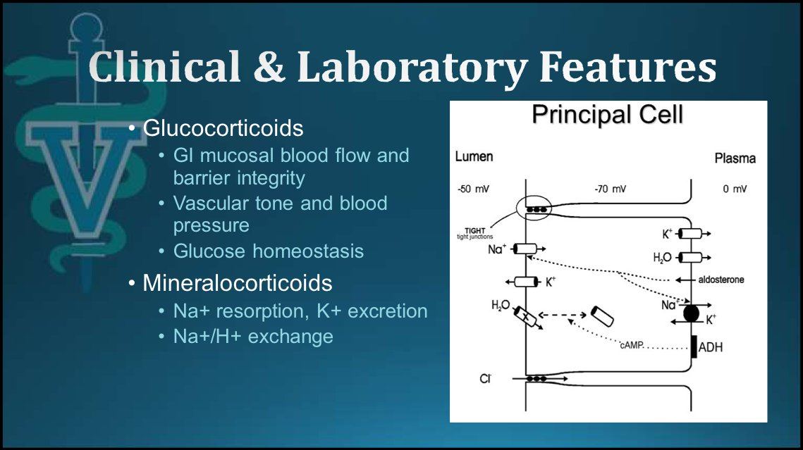
糖皮質素（cortisol）
- 腸胃黏膜血流與屏障完整性
- 血管張力與血壓
- 血糖恆定
礦物皮質素（醛固酮）
- Na⁺ 再吸收、K⁺ 排泄
- Na⁺/H⁺ 交換
2. 臨床與實驗室特徵
▾🎤 臨床表現
- 症狀的嚴重度與病程長短差異很大！主要影響三個系統：腸胃道、泌尿、心血管。
- 嗜睡、虛弱很常見；多數病例理學檢查模糊、沒有特異性。
- 🎤 病史與理學檢查變化這麼大，是因為 cortisol 在全身有太多功能。醛固酮的角色比較明確：電解質、體液容積、水分恆定。
- 🎤 實際上很多病例來看診的原因只是非特異性的嗜睡、食慾下降。臨床懷疑往往是看到檢驗數值才升起來的。
🎤 檢驗異常的比例（Scott-Moncrieff, Ettinger 教科書）
| CBC | % |
|---|---|
| 非再生性貧血 | 27 |
| 嗜酸性球增多 | 20 |
| 嗜中性球增多 | 32 |
| 淋巴球增多 | 10 |
| 缺乏壓力白血球像 | 92 |
| 生化 | % | 生化 | % |
|---|---|---|---|
| 高血鉀 | 95 | 低血糖 | 17 |
| 低血鈉 | 81 | 肝指數上升 | 30–50 |
| 低血氯 | 42 | 代謝性酸中毒 | 40 |
| 高血鈣 | 31 | 低白蛋白 | 6–39 |
| 氮血症 | 88 | 低膽固醇 | 7 |
| 高血磷 | 68 | USG < 1.030 | 60 |
- 🎤 我們會試著把每個異常歸類：是 cortisol 缺乏造成的，還是醛固酮缺乏造成的。
- 🎤 比例因研究而異。一般診所的研究，典型電解質異常的比例很高；大學醫院的研究則有較多特殊病例。
3. 病例：Addison 是或否？
▾講者讓台下看完每個病例的檢驗後投票「Addison 是／否」，再公布 ACTH 刺激結果。所有病例都來自 MSU，而且每一隻都有足夠的懷疑去做檢測。
🎤 病例 1：9 月齡未絕育母犬，混種 → 不是 Addison（腎盂腎炎）
- 病史：從小尿失禁，間歇性排尿困難和血尿；數週嗜睡、體重減輕；3 天厭食。
- 🎤 這隻狗已知有異位輸尿管【更正】（逐字稿誤為 in-topic verters），矯正太貴，飼主就這樣養著。這次是因為最近幾週嗜睡、消瘦，就診當天完全不吃，才從急診進來。
- CBC：WBC 30.0 H、分葉嗜中性球 23.1 H、單核球 5.4 H、PLT 371 H、TP 5.6 L；淋巴球 1.2；Hct 48。
- 生化：BUN 67 H、Crea 1.0、Na 122 L、K 7.5 H、Na:K 16、Cl 93 L、Ca 7.9 L、P 7.6 H、Mg 3.4 H、Alb 2.6 L。
- 尿檢：紅色混濁、USG 1.050、pH 8.7、蛋白 4+、潛血大量、WBC/RBC 數不清、細菌大量。🎤「尿看起來基本上就是膿。」
- 🎤 台下多數投「是 Addison」。結果絕對不是：ACTH 刺激完全正常，基礎 cortisol 約 2 µg/dL，刺激後升到約 13–14 µg/dL。最可能是腎盂腎炎【更正】（逐字稿誤為 pilonephritis）造成這些電解質異常。
🎤 病例 2：4 歲已絕育母犬，混種 → Addison（典型危象）
- 病史：一個月嗜睡、食慾下降、血便、虛弱；完全厭食 3 天；就診時虛脫、意識遲鈍。🎤 到院時已經虛脫、插管。
- CBC：Hct 60 H【更正】（逐字稿誤為 16%）、RBC 8.4 H、TP 4.1 L、PLT 83 L、淋巴球 4.1 H。🎤 血液濃縮，很多急性就診的 Addison 都會這樣；也有淋巴球增多。
- 生化：BUN 93 H、Crea 3.6 H、Na 127 L、K 8.1 H、Cl 101 L、HCO₃ 14 L、P 9.9 H、Alb 1.6 L、Glu 38 L、Chol 48 L、CK 206 H。
- 🎤「不要被上一個病例影響，上一個才是陷阱。」這隻狗像是讀過教科書，幾乎每一項 Addison 會有的血液和生化異常都有。基礎 cortisol 測不到，刺激後也測不到。
- 🎤 兩個病例的電解質幾乎一模一樣，一個是 Addison，一個不是。
🎤 病例 3：12 歲已去勢公犬，Brittany Spaniel → 不是 Addison（鞭蟲）
- 病史：嗜睡和食慾減退 2 個月，持續惡化；間歇性下痢 3 週；虛弱 5–7 天；疫苗按時、每月 Sentinel。
- 🎤 這是講者導師的狗。導師養了很多 Brittany 當獵犬，帶來看長期嗜睡、食慾差、慢慢變瘦，最近在家很虛弱。
- CBC：Hgb 8 L、Hct 21 L、嗜酸性球 1.6 H，其他沒什麼。
- 生化：BUN 35 H、Crea 1.8、Na 142 L、K 5.4 H（Na:K 約 26，輕度）、Cl 106 L、TCO₂ 17 L、Alb 1.9 L、USG 1.010。
- 🎤「你可以說也許是、也許不是。」結果是鞭蟲，不是 Addison。講者的導師正是描述這個「假性 Addison」現象那篇研究的第二作者，而他自己的狗就得了這個症候群。
🎤 「偉大的模仿者」
會模仿 Addison 電解質型態的疾病：
- 急性腎損傷（AKI）
- 腎後性阻塞（包括輸尿管）
- 體腔積液（胸水、腹水）
- 腸道疾病
- 🎤 最常見的是 AKI，其次是泌尿道阻塞、長期大量的胸腹水，以及某些腸道疾病。電解質異常不是敏感也不是特異的指標，但確實是一個線索。
🎤 病例 4：4 歲已絕育母犬，混種 → Addison
- 病史：搔癢、熱點；家中另一隻狗安樂死後，一個月嗜睡、輕度食慾差；「整天慢慢吃」vs「定時吃完」。
- 🎤 從基礎照護門診來看熱點，有季節性皮膚問題。飼主提到平常一起玩的同伴上個月安樂死後，這隻狗就怪怪的，以為是心理因素、在難過。以前吃飯狼吞虎嚥，現在一整天慢慢吃。
- CBC：輕度貧血（Hct 37 L）、WBC 16.6 H、淋巴球 6.6 H、嗜中性球正常偏高。
- 生化：BUN 28 H、Crea 1.9 H（輕度氮血症）、Na 142（正常）、K 5.2 H（只是略高）、Na:K 27、Ca 11.5 H、P 6.0 H、Alb 2.6 L、Amylase 1639 H。
- 🎤「看起來沒什麼，變化都很輕微。」結果絕對是 Addison。
- ✍️ 筆記 ACTH 刺激：前 0／後 0。
- 🎤 很多狗在演變成危象之前，可能已經看過好幾次診，那時的異常輕微得多。這是一個光譜，沒有清楚的「典型」，表現方式非常多。
🎤📸 病例 5：Harlow，3 歲已絕育母犬，大丹 → Addison（非典型，醛固酮也是 0）
- 病史：反覆吸入性肺炎；慢性反流、食道蠕動異常；間歇性下痢。
- 🎤 大丹在美國很受歡迎，約 60 公斤。飼主是 21 歲大學生，和三個室友一起養。這隻狗多次因吸入性肺炎掛急診，第三次時急診做了食道攝影，發現食道功能異常【更正】（逐字稿誤為 dysplasia），轉到內科做檢查。
- CBC（當時有活動性吸入性肺炎）：輕度貧血、嗜中性球輕度增多、淋巴球 6.6 H、嗜酸性球 1.8 H。
- 生化：Na 145、K 4.6、Na:K 32，「正好在參考範圍正中間」；Alb 2.4 L、Glu 73 L、Chol 73 L（都是輕度下降）、CK 1245 H。
- 🎤「有支持的理由，也有反對的理由。」結果是 Addison，完全沒有 cortisol。也測了醛固酮：儘管電解質正常，醛固酮也完全測不到。
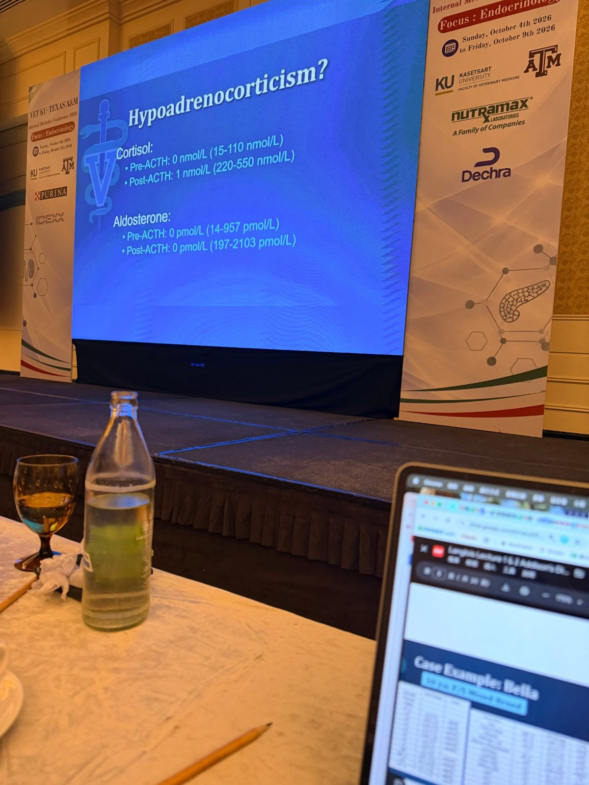
🎤 病例：Bella，10 歲已絕育母犬，混種 → Addison（非典型）
- 檢驗：Na 145、K 4.3、Na:K 34（正常）、BUN 11 L、Ca 8.9 L、Mg 1.5 L、TP 4.3 L、Alb 1.6 L、Glu 46 L、Chol 52 L、AST 101 H、CK 897 H。
- 🎤 因為非特異性症狀就診，檢驗「除了輕微的膽固醇下降之外沒什麼」，還有血糖中度下降、低白蛋白。同樣地，cortisol 測不到，醛固酮也測不到。這就是傳統上所說的「非典型 Addison」。
4. 非典型 Addison
▾🎤 術語
血鈉、血鉀正常的自然發生 HA，文獻用過的名稱：A. 非典型 HA；B. 糖皮質素缺乏型 HA；C. 原發性糖皮質素缺乏型 HA；D. 腎上腺功能不全；E. 血鈉正常、血鉀正常的 HA（eunatremic and eukalemic HA）；F. 其他。
- Project ALIVE：建立獸醫內分泌學的共識術語。講義的玩笑：「ALIVE 計畫的政治成分不亞於科學成分。」
- 🎤 現在建議用 E，但太拗口，講者還是說「非典型」。這些狗不是以典型方式表現，所以常被誤診。研究顯示非典型病犬比較會有 cortisol 缺乏的變化：輕度貧血、白蛋白／膽固醇／血糖輕度下降。你必須注意到這些變化，否則可能根本不會想到要檢測。
典型 vs 非典型（Thompson et al. JAVMA 2007）
- 非典型（GDH）病犬 HCT（31% vs 41%）、膽固醇（94 vs 163 mg/dL）、白蛋白（2.1 vs 3.0 g/dL）較低。
- 非典型病犬臨床症狀持續較久（4.4 vs 1.2 個月）。
- GDH 病犬偶爾也有氮血症。
- 臨床症狀比較表中，只有嘔吐有顯著差異（85% vs 54%，p = 0.048）。
🎤 盛行率
| 研究 | 非典型比例 |
|---|---|
| Peterson 1996 JAVMA | 4%（10/225） |
| Scott-Moncrieff 2007 JAVMA | 24%（11/46） |
| Adler 2007 JVIM | 7%（6/71） |
| Gold 2016 JVIM | 17%（28/163） |
| Reagan 2020 Domest Anim Endocrinol | 42%（57/133） |
🎤 比例很依賴研究族群。全部加起來，大約 20% 的 Addison 病犬屬於「非典型」。
🎤📸 為什麼電解質會正常？三種可能
- 🎤 次發性 HA：病在腦下垂體或下視丘，ACTH 缺乏（例如腦下垂體腫瘤或其他腦部疾病）。醛固酮正常，電解質也正常，因為 ACTH 在醛固酮調控中只扮演很小的角色。這確實會發生，有文獻記載。
- 🎤 原發性但醛固酮正常：免疫攻擊放過了腎上腺皮質的外層（球狀帶），或只是疾病早期。
- 🎤 原發性而且醛固酮也沒有：像前面兩隻狗，靠某種其他機制維持電解質正常。
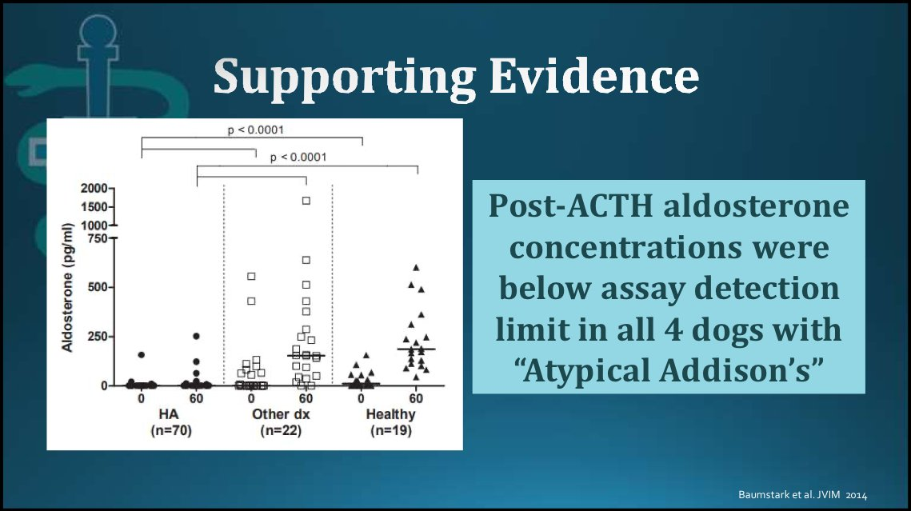
- 🎤 約十年前的研究：Addison 病犬 ACTH 刺激後醛固酮低於檢測下限，其中 4 隻非典型病犬也一樣。大多數非典型病犬雖然電解質正常，醛固酮仍然缺乏。
🎤 病例：Molly，5 歲已絕育母犬，拉布拉多
- 數天嗜睡；Crea 1.8、Alb 2.4、Chol 130、淋巴球 3.6×10³。
- ACTH 刺激：前 5、後 5 nmol/L；eACTH 104 pg/mL（19–67），偏高；醛固酮 前 10、後 23 pmol/L（偏低）。
- 🎤 骨科門診來評估十字韌帶斷裂，麻醉前檢查發現類似的細微變化，結果是 Addison。eACTH 高代表原發性【更正】（逐字稿誤為 hyperadrenocorticism）；醛固酮不恰當地偏低。
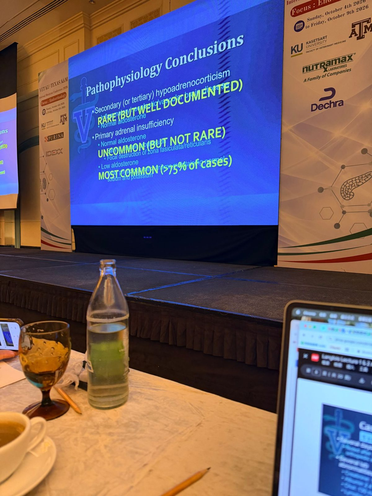
75%" loading="lazy">| 機轉 | 醛固酮 | 頻率（📸 現場） |
|---|---|---|
| 次發性（或三級）HA：腦部發炎／腫瘤／血管疾病 | 正常 | 罕見（但有充分文獻記載） |
| 原發性：疾病早期、束狀帶／網狀帶局部破壞 | 正常 | 不常見（但並不罕見） |
| 原發性：靠其他機制維持鈉鉀正常 | 偏低 | 最常見（> 75%） |
🎤 非典型 → 典型
| 研究 | 轉為典型 | 追蹤時間 | 缺點 |
|---|---|---|---|
| Sadek & Schaer 1996 | 15%（2/13） | 0.75–1 個月 | 收案標準、追蹤不一致 |
| Thompson 2006 | 10%（1/10） | 7 個月 | 追蹤不一致 |
| Richartz & Neiger 2011 | 20%（1/5） | 5 個月 | 1 隻用 fludrocortisone |
| Baumstark 2014 | 25%（1/4） | 6 個月 | 1 隻用 fludro、追蹤不一致 |
| Wakayama 2017 | 14%（5/35） | 2–51 個月 | 追蹤不一致 |
| Irish Vet J 2024 | > 40%（44%） |
- 🎤 沒有醛固酮的狗，會不會變成典型？沒有很好的答案。早期研究說約 20%，但都是回溯性研究，很多失聯、沒有長期追蹤。較新的 Irish Vet Journal 研究是 44%。
- 🎤 有些（但絕對不是全部）會隨時間出現典型電解質異常【更正】（逐字稿誤為 luxemburgite）。
5. 臨床辨識、JFK 與 POMC
▾🎤 臨床辨識
- Addison 會以很多種方式表現 → 提高警覺是關鍵；漏診的多半是早期或非典型病例。
- 什麼情況值得檢測？
- 不明原因的 Na:K 異常（高鉀或低鈉，不論比值）
- 未確診的腸胃道疾病（包括食道疾病）
- cortisol 缺乏的血液／生化表現：生病卻淋巴球增多；低膽固醇／白蛋白／血糖
- 非特異性的嗜睡與虛弱
- 🎤 低鈉高鉀的狗大家都抓得到。難抓的是以腸胃症狀表現、電解質正常的狗，這些才是我們要保持警覺的。
📸 現場🎤 甘迺迪總統與色素沉著：POMC 衍生物
- 🎤 美國史上很有名的總統 JFK 就是 Addison 病人。他有很多病，在任內大多被隱瞞。大家印象中他曬得很黑、古銅色，但他是新英格蘭人，日照應該比密西根還少，沒理由這麼黑。
- 🎤 人類 Addison 病人常出現病理性色素沉著，因為 ACTH 的大型前驅分子切下來的產物之一就是黑色素細胞刺激素（MSH）。這也是人類腦下垂體依賴型庫興氏症會色素沉著的原因。狗則看不到這個現象。
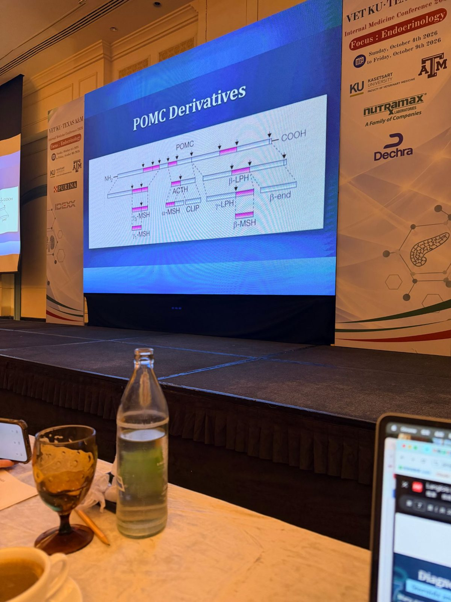
| POMC 片段 | 再切出 | 作用 |
|---|---|---|
| N 端片段 | γ₃-MSH → γ₁-MSH | MSH 家族 |
| ACTH | α-MSH＋CLIP | ACTH 刺激腎上腺；α-MSH 刺激黑色素細胞 |
| β-LPH | γ-LPH → β-MSH；β-endorphin | β-MSH 刺激黑色素細胞；β-腦內啡止痛 |
6. ACTH 刺激試驗與類固醇
▾🎤 ACTH 刺激試驗
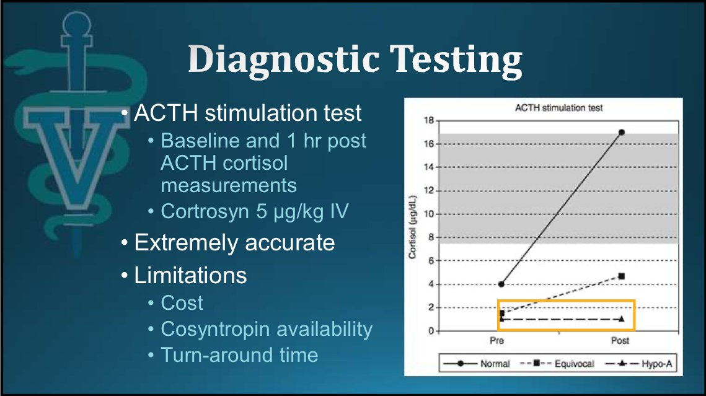
- 測基礎值和注射後 1 小時的 cortisol；Cortrosyn（cosyntropin）5 µg/kg IV。
- 極度準確。限制：費用、cosyntropin 取得性、等報告時間。
- 🎤 幾十年來都是金標準。觀念很簡單：沒有 Addison 的狗，給超生理劑量 ACTH 會有很旺盛的反應；腎上腺萎縮或被破壞的 Addison 病犬則不會。最大的陷阱是檢測前有沒有用過外源性糖皮質素。
- 🎤 偶爾會有模稜兩可的結果，但很少見（處理方式見 Q&A）。
- ACTH 劑量：講者一直用 5 µg/kg。有研究說診斷 Addison 用 1 µg/kg 就夠，美國 ACTH 很貴才會研究替代方案。但講者不是很支持這篇：大多數 Addison 病犬是 0 和 0，給多少 ACTH 都一樣；不是 Addison 的狗很多光看基礎值就排除了，劑量也無所謂。真正需要判斷的是「反應偏低」的那一群，而那篇研究大致漏掉了這群狗。MSU 每隻病患本來就要買一整瓶 ACTH，所以照用 5 µg/kg。如果費用真的是問題，用低劑量可以，但除了省錢之外沒有其他好處。
- 怎麼測醛固酮：醛固酮主要受血鉀（直接作用在腎上腺）和腎素–血管收縮素系統調控。ACTH 也會可預期地讓醛固酮上升，所以測醛固酮的方式和 ACTH 刺激一樣：測基礎值和注射 5 µg/kg 後 1 小時。
🎤 院內 cortisol 檢測
- ELISA 與 RIA 整體相關性極佳。但是：低值區的動態範圍令人擔心；cortisol < 1 µg/dL（28 nmol/L）時要小心；終身疾病，建議送參考實驗室。
- 🎤（Q&A）各家都有院內機（Heska、Antech 等），講者太太也是獸醫，也用院內 cortisol。數據顯示相關性很高，只有在非常低的數值才開始分歧。品管做好的話，用院內機排除 Addison 可以很放心。但如果要依此確診，建議把 ACTH 刺激後 1 小時的樣本送參考實驗室確認：通常結果一致，但這是要治療很多年的終身疾病。
🎤 類固醇與 ACTH 刺激試驗
- 許多外源性糖皮質素會與現行 cortisol 檢測交叉反應；dexamethasone 不會，採完基礎值後給單劑 dex 不會干擾結果。
- 外源性類固醇會抑制內源性 cortisol 製造，造成腎上腺萎縮。
- 🎤 雖然 dex 不會交叉反應，連續給藥仍會影響 HPA 軸。
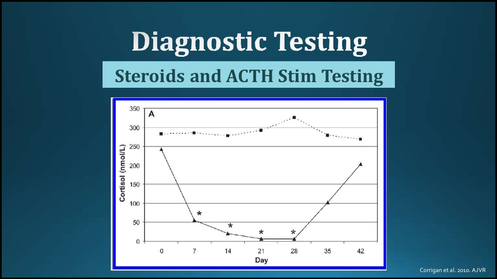
- 🎤 常被問：要給幾劑類固醇，狗才會腎上腺萎縮、對 ACTH 反應不足？這是 Auburn 團隊約 15 年前的研究：beagle 口服 prednisone 0.5 mg/kg、連續一個月。只有每週測一次，所以不知道確切時間點，但給藥 7 天時，刺激後 cortisol 就可能看起來和 Addison 一樣。
- 🎤 經驗法則：用糖皮質素超過 2–3 天，判讀就要非常非常小心。
- 🎤 沒人答得出來的問題：停藥多久 HPA 軸才會恢復？這篇研究說用藥一個月要停至少兩週。用了好幾個月的呢？沒有答案，比較麻煩，也許測醛固酮是比較好的選擇。
🎤 外用類固醇也會抑制 HPA 軸
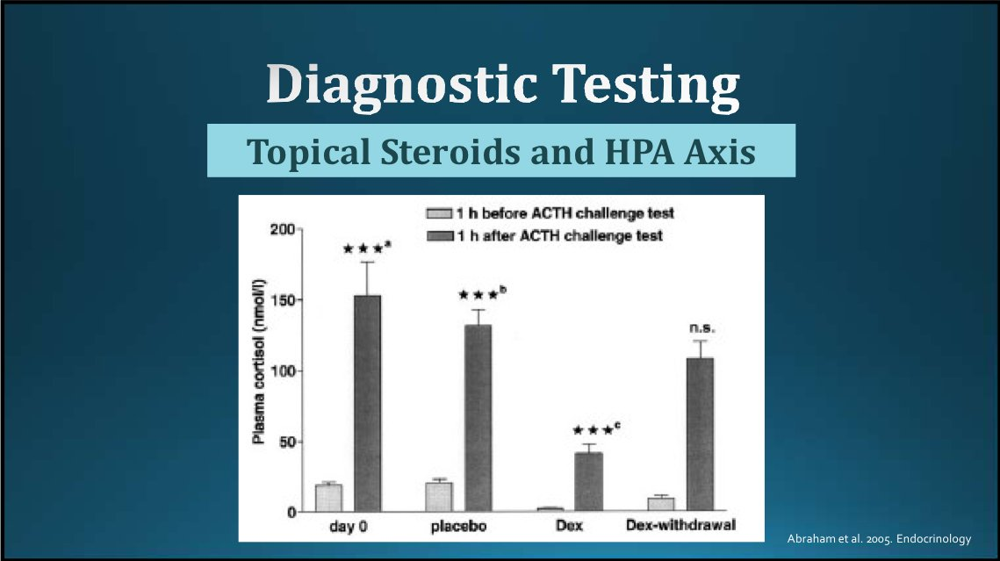
🎤 不只是全身性或口服，任何糖皮質素都算，包括耳藥、眼藥、皮膚藥。
7. 基礎 cortisol
▾🎤📸 病例：Maya，12 歲已絕育母犬，波士頓㹴 → 不是 Addison
- 因嚴重腸胃道出血就診：厭食、黑色焦油便；HCT 13%，小球性、再生性。長期腸胃病史：數年間歇性嘔吐與食慾差、輕度消瘦、飲食治療部分控制。
- 生化：BUN 62 H、Crea 1.1、Na 124 L、K 4.4、Cl 93 L、Ca 7.7 L、TP 4.2 L、Alb 1.6 L。
- 🎤 我們看很多腸胃病，而腸胃病可能是 Addison 的表現，所以很多狗都要評估 Addison。這隻狗 12 歲、多年腸病，檢驗有些讓人擔心的地方，於是做了 ACTH 刺激。
- 🎤 但 ACTH 刺激在美國要 250–300 美元。花這麼多錢只為了說「牠沒有 Addison」，這是最大的問題。問題不在確診，而在排除。
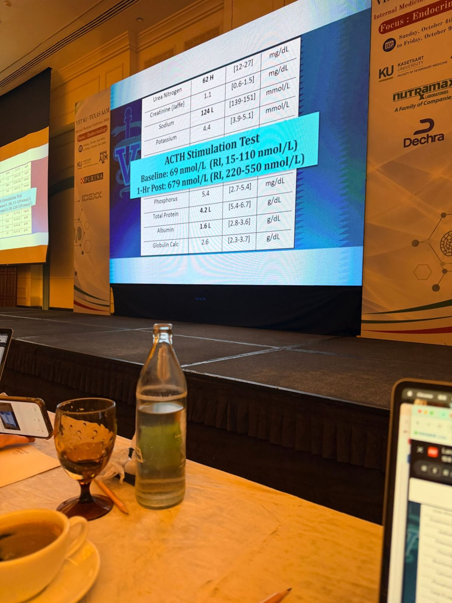
🎤 ACTH 刺激的替代方案
- 研究過的生物標記：常規檢驗（Na/K 比）、cortisol/ACTH 比、醛固酮/腎素比、機器學習／AI。
- → 最受關注的是基礎 cortisol 與尿 cortisol／UCCR。
- 🎤 最早是 NC State 的 Birkenheuer 與 Lunn 團隊約 15 年前提出：基礎 cortisol > 2 µg/dL（55 nmol/L）很適合排除 Addison。
🎤 MSU 資料（Gold, Langlois, Refsal 2016 JVIM）
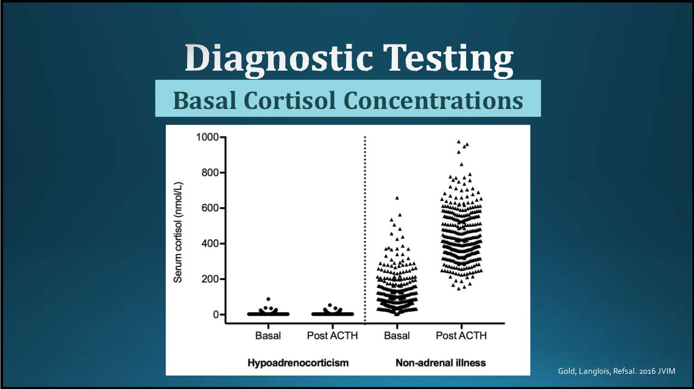
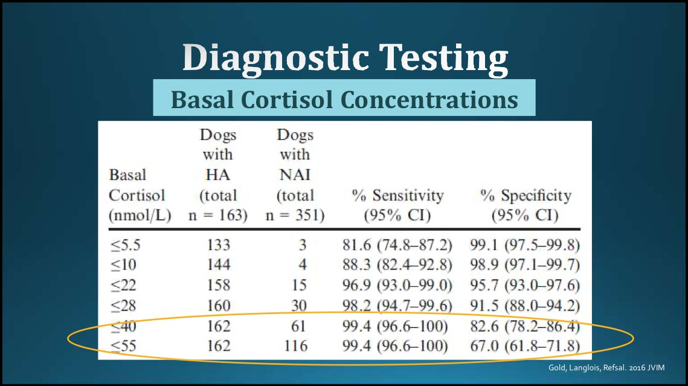
- 🎤 幾乎 100% 的 Addison 病犬基礎 cortisol < 2 µg/dL（55 nmol/L），很多 NAI 病犬則高得多。實務上，基礎值 > 1.8–2 µg/dL 對排除 Addison 很有價值，很多人都這樣用。
🎤📸 病例：Gus，8 月齡未去勢公犬，拉布拉多 → 排除 Addison
- 急性嗜睡、嘔吐、食慾差；檢驗讓人有點擔心 Addison：Na 129 L、K 4.5、Cl 100 L、Glu 141 H、BUN 44 H、Crea 2.7 H、TCO₂ 13.6 L。
- 🎤 這是我們想用基礎 cortisol 的情境：年輕狗、不太覺得是 Addison，但想排除。基礎 cortisol 很高，可以說沒有 Addison。只測一個 cortisol 就幫飼主省了 150 美元。
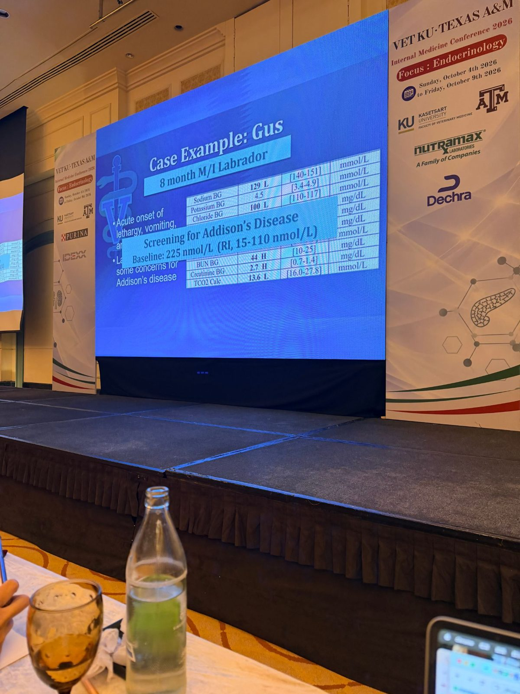
🎤 基礎 cortisol 的最大問題：Bernadette
- 1.5 歲已絕育母犬，標準貴賓：因非特異性疾病（消瘦、食慾差）就診；有些「有點像 Addison」的結果：Alb 2.6、Glu 79、非再生性貧血、淋巴球增多。
- 🎤 看很多腸胃病的人都知道，這些通常是比較穩定的狗。標準貴賓是好發品種。基礎 cortisol 測出 34，怎麼辦？只好請狗再回來做刺激試驗。
- 🎤 這就是基礎 cortisol 最大的挑戰：很多狗的基礎值 < 55 nmol/L，想排除卻排除不了，第二次回診又要花錢花時間，原本想省的都沒省到。篩檢時如果要叫一半的狗回來重測，就不是很好的篩檢工具。
8. 尿 cortisol 與 UCCR
▾🎤 起源：2018 ACVIM 摘要
- 理論優點：反映較長時間的 cortisol 分泌、避免瞬間波動影響、單一樣本又便宜。
- ACVIM 2018 摘要（NC State，Dechra 贊助）：5 隻 HA、130 隻 NAI；UCCR ≤ 3 敏感度與特異度皆 100%。
- 🎤 想找特異度更好、「偽陽性」更少的篩檢。UCCR 本來是篩檢庫興氏症用的，能不能反過來篩 Addison？同一個 NC State 團隊提出 UCCR ≤ 3 可診斷、> 3 可可靠排除。結果很有趣，但只有 5 隻 Addison，而且一直沒有發表（講者問過，原因說來話長）。
🎤 2022 年兩篇研究
| Del Baldo et al. JVIM 2022 | Moya et al. JAVMA 2022（MSU） | |
|---|---|---|
| 族群 | 10 HA、18 NAI、19 健康犬 | 41 HA、107 NAI |
| 採尿 | 在家或院內 | 院內 |
| 方法 | CLIA | RIA 與 CLIA |
| 結果 | HA 與 NAI 無重疊；健康犬與 HA 1 例重疊；AUC 0.99 | CLIA 無重疊、RIA 1 例重疊；AUC 0.99（RIA）、1.00（CLIA） |
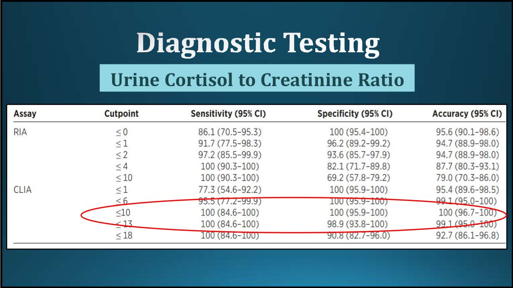
- 🎤 2022 年歐洲團隊和 MSU 幾乎同時發表，歐洲團隊早了幾個月。兩篇結論一樣：Addison 病犬的 UCCR 遠低於 NAI。更驚喜的是，似乎不只能篩檢，可能還有確診價值（這在內分泌界仍有爭議）。
🎤 2021 年抗體更換
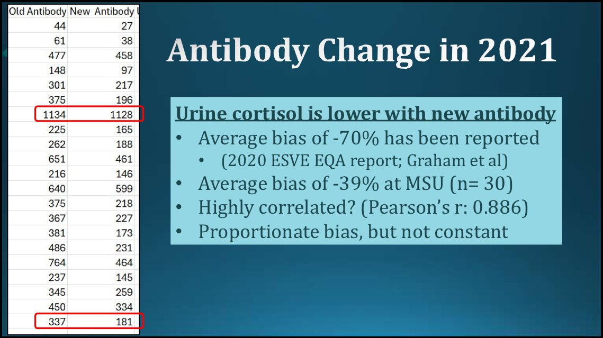
- 新抗體測出的尿 cortisol 較低：已報告平均偏差 −70%（2020 ESVE EQA，Graham 等）；MSU 平均 −39%（n=30）；Pearson r = 0.886；等比例偏差但不固定。
- 🎤 後來發生不幸的事：檢測用的抗體換了。MSU 用化學冷光免疫分析（Immulite【更正】），原本以為 UCCR < 10 就是神奇切點，結果換抗體後尿 cortisol 差很多。
- 🎤 偏差不固定：有一個樣本舊抗體 1134、新抗體 1128，幾乎一樣；底下那個舊的 337、新的 181，差很多。之前發表的切點等於全部作廢，必須重做研究。
🎤 新抗體下的研究
- 歐洲團隊用新抗體重做：20 HA、60 NAI＋42 健康犬；尿 cortisol < 55 nmol/L：敏感度 100%、特異度 90%；UCCR 8.5×10⁻⁶：敏感度 100%、特異度 71.7%。→ 特異度和 MSU 觀察、先前研究不一致。
- 🎤 MSU 也重新分析自己的資料：在我們手上仍然很準，只是切點不同。
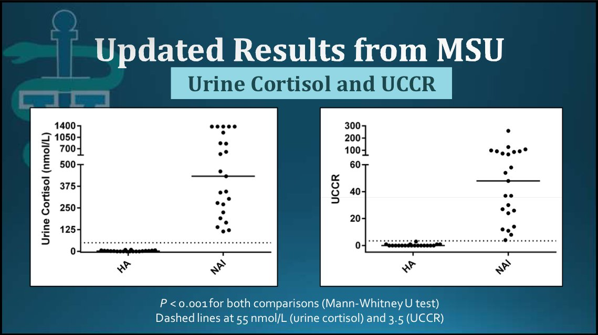
- 🎤「我不相信有任何檢驗是 100%」，但以手上的資料，兩群幾乎 100% 分開。
- 🎤 兩篇研究都顯示：直接測尿 cortisol 比 UCCR 更好，兩群分得更開。
- 🎤 尿 cortisol > 40–55 nmol/L 可以可靠地排除 Addison。數值非常低時能不能用來確診？MSU 的資料說可以。
🎤✍️ 判讀尿 cortisol：臨床價值
| 支持確診？ | 模稜兩可 | 排除 HA | |
|---|---|---|---|
| 尿 cortisol（nmol/L） | ≤ 9 | 10–40 | ≥ 41 |
| UCCR | ≤ 2 | 3–8 | ≥ 9 |
- 尿 cortisol 與 UCCR 可能是比基礎血清 cortisol 更好的篩檢；也許較低切點能確診；必須院內採尿；切點依方法／實驗室而定；準確量化「低」cortisol 很關鍵。
為什麼兩篇研究結果不同？兩個關鍵
① 採尿地點：要在醫院
- 🎤 歐洲研究允許飼主在家採尿
- 篩庫興氏症要在家採，以減少壓力
- 篩 Addison 正好相反：在醫院採，利用壓力
- NAI 的狗會因壓力產生 cortisol 高峰，Addison 狗沒有，兩群分得更開
② 實驗室能測多低
- 🎤 美國很多實驗室 < 1 µg/dL 就只報「< 1」（< 27.5 nmol/L）
- 但很多 Addison 狗只有 2–3 nmol/L
- 把 3 和 27.5 當成一樣，結果就差很多
- MSU 報到 1 nmol/L；至少要報到 約 5 nmol/L（0.3 µg/dL）
| ✍️ 筆記對照 | 採尿地點 | 原因 |
|---|---|---|
| Addison（找 cortisol 太低） | 醫院 | 利用就醫壓力把正常狗數值拉高 |
| Cushing's（找 cortisol 太高） | 在家（早晨第一泡尿） | 避開就醫壓力造成偽陽性 |
- 🎤 MSU 醫院正逐漸改用尿 cortisol 當 Addison 的篩檢，取代基礎 cortisol。問台下：這裡大多還是用基礎值？「基礎值是好檢驗，但老實說尿 cortisol 可能更好。」
🎤📸 套用：Bernadette 與 Hazelnut Latte → 兩隻都不是 Addison
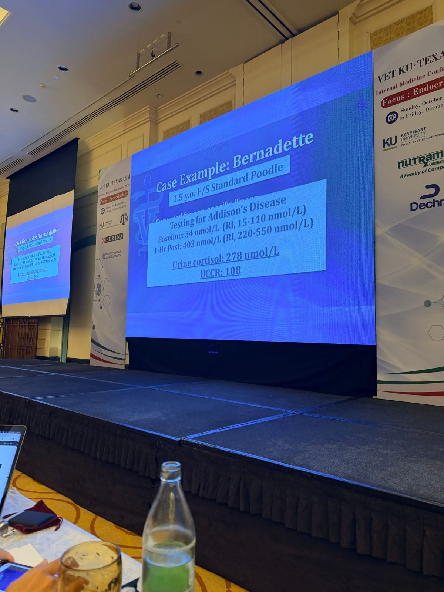
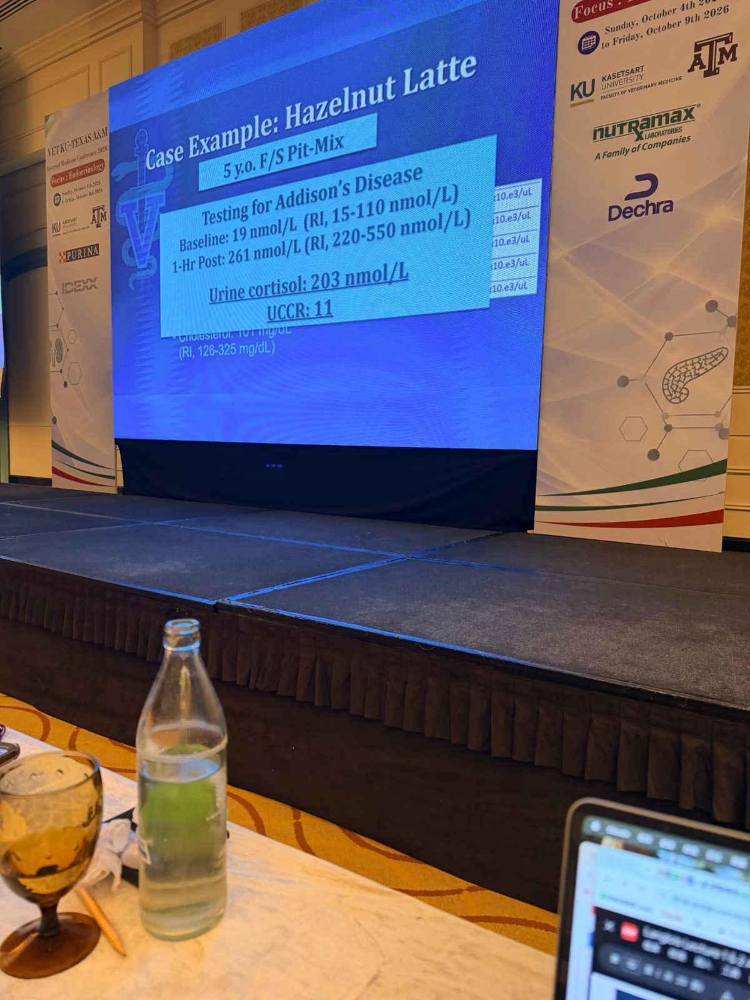
| Bernadette（1.5 歲標準貴賓） | Hazelnut Latte（5 歲比特混種） | |
|---|---|---|
| 背景 | 非特異性疾病、輕微「像 Addison」 | 慢性嘔吐下痢消瘦；PLE：Alb 1.4、Chol 101 |
| 基礎 cortisol | 34 → 排除不了 | 19 → 很低，排除不了 |
| ACTH 刺激後 | 403（正常） | 261（正常） |
| 尿 cortisol | 278 → 排除 | 203 → 排除 |
| UCCR | 108 → 排除 | 11 → 排除 |
- 🎤 Bernadette【更正】（逐字稿誤為 Barnet）也在 MSU 的 UCCR 資料裡。基礎值無法排除，但尿 cortisol 和 UCCR 絕對可以排除。
- 🎤 小比特混種來做腸胃評估，有低白蛋白、低膽固醇。基礎值排除不了，本來要請牠回來做完整 ACTH 刺激；看尿 cortisol，一開始就能有效排除。
9. 診斷總結
▾🎤 三種檢測怎麼用
基礎 cortisol
- 篩檢用：> 55 nmol/L 排除
- 懷疑程度低到中、穩定的狗
尿 cortisol／UCCR
- 可能是比基礎值更好的篩檢
- 也許有確診切點（尿 cortisol < 10 nmol/L？）
ACTH 刺激試驗
- 仍是金標準
- 高度懷疑、重症的狗
- 🎤 基礎 cortisol 仍被廣泛使用，但你會叫很多狗回來做完整刺激試驗。尿 cortisol 和 UCCR 是更好的篩檢；能不能確診還沒定論。
- 🎤 MSU 因為看大量腸胃病，一年要跑 600–700 個基礎 cortisol，很多狗得回來做 ACTH 刺激。改用尿 cortisol 後，「回診重做」少了很多。
10. 第一堂 Q&A
▾如果真的 ≥ 2 µg/dL，陰性預測值大約 99.8%。沒有任何東西是 100%，但除非有特殊理由懷疑，不需要再做刺激試驗。切點也許可以再低一點（也有研究說應該高一點），我們總想找 100% 的切點，但總會有例外。
- 刺激後只到 約 2.4 µg/dL（剛好超過 2）：比較擔心，會請狗回來重做，可能測醛固酮，因為偶爾有狗醛固酮先掉、cortisol 後掉，尤其有電解質異常時。
- 刺激後到 3.5–4 µg/dL：通常相當有信心不是 Addison，最後大多有其他疾病。
11. 急性處置
▾急性處置步驟
治療考量：急性 vs 慢性、糖皮質素補充、礦物皮質素治療、支持療法、併發疾病。（圖：Florinef、Prednisone、Zycortal、Percorten-V）
- 矯正低血容／低血壓
- 矯正電解質異常
- 矯正酸鹼失衡
- 荷爾蒙補充：Dexamethasone 0.1–0.2 mg/kg IV q24h（住院期間）；礦物皮質素在出院前一天開始
- 腸胃支持：制酸劑（腸胃出血）或止吐劑（噁心）
- 頑固性高血鉀（不常見）：葡萄糖酸鈣（ECG 嚴重異常）、葡萄糖＋胰島素。
- 嚴重時處理低血糖或貧血；密集監測。
- → 多數狗 48–96 小時內出院。
- 🎤 這堂主要講慢性處置和礦物皮質素治療，急性處置只簡單帶過。
- 🎤 容積不足常被低估，這些狗需要大量、快速的擴容。第 1–3 點（低血容、電解質、酸鹼）全部靠輸液解決。
- 🎤 MSU 一懷疑 Addison 就給 dexamethasone 0.1–0.2 mg/kg（通常用 Dex SP，哪一種都可以）。礦物皮質素通常在住院第二天開始，第一天讓輸液和其他處置先把狗穩定下來。
- 🎤 頑固性高血鉀非常少見，大多數狗對輸液反應很快。常看到的是「實習醫師式的高血鉀治療」：晚上值班的實習醫師看到 K 7.5 就嚇壞了，立刻開始降鉀。其實大多數狗除了輸液不需要任何特別處理。
- 🎤 MSU 大多數狗 2–4 天出院。
📸 ICU 輸液
| 輸液 | Na（mEq/L） | K（mEq/L） | 緩衝劑 |
|---|---|---|---|
| 0.9% NaCl | 154 | 0 | 無 |
| Normosol-R | 140 | 5 | 醋酸鹽／葡萄糖酸鹽 |
| LRS | 130 | 4 | 乳酸 |
- → 常常需要積極復甦
- → Addison 病犬的輸液速率常常比較高（前 1–2 小時 40–80 mL/kg/hr？）
- → 頑固性低血壓：單劑 fludrocortisone？
- 🎤 每堂內分泌課都會問：Addison 危象的首選輸液是什麼？很多人教 0.9% NaCl。這是很好的輸液，但它缺緩衝劑，所以有輕微酸化作用；鈉含量也偏高（狗正常 Na 約 140–150，生理食鹽水 154）。
- 🎤 LRS、Normosol 的鈉也很高，好處是有緩衝劑，缺點是含少量鉀。但這點鉀不影響利尿排鉀，一樣能把血鉀降下來。
- 🎤 要小心滲透壓變化太快。MSU 這些年見過幾隻狗因為低張矯正太快，發生脫髓鞘損傷（橋腦中央髓鞘溶解）。
- 🎤 講者教學生的原則：
- 血鈉極低（110–115）：在推注補容積時，Normosol 或 LRS 可能是比較好的選擇。
- 血鈉約 125、酸鹼問題不大：0.9% NaCl 就是首選。
- 很多狗以低血容休克來院時還不知道是 Addison，MSU 第一袋拿的常常是 LRS。三種輸液對大多數 Addison 病犬都有效，記得考慮鈉負荷和酸鹼狀態就好。
- 🎤 研究顯示很多狗在住院前 1–2 小時接受 40–80 mL/kg/hr，幾乎等於換掉一個血量。不是每隻都這樣，但需要非常大量的輸液。而且牠們沒有醛固酮，給的液體還會一直流失，所以 Addison 病犬常常是各種疾病裡輸液速率最高的。
- 🎤 頑固性低血壓：還不確定是不是 Addison 時，不想直接打一個月份的 DOCP，MSU 會給單劑 fludrocortisone。大多數狗用不到，但對真正頑固性低血壓的狗很有幫助。
預算限制
急性期所有狗都需要
- 積極輸液
- 糖皮質素補充
- 通常需要住院
不是所有狗都需要（35 kg 狗估算）
- PPI／pantoprazole（฿5,000/天）
- 多次（甚至任何一次？）止吐劑（฿2,500/天）
- 針對高血鉀的治療（฿1,000–3,000）
- ECG 監測（฿5,000/天）
- 每天多次血氣（4 次 VBG ฿12,000/天）
- 🎤 MSU 估計一次 Addison 危象要 4,000–7,000 美元，住院 2–4 天，對很多飼主是很大的負擔，其中很多花在可能不必要的處置上。（講者提到 Dr. Mott 前一天講的糖尿病照護光譜。）
- 🎤 急性期最救命的是輸液，它能處理大部分異常。當然也需要糖皮質素，很多狗需要住院。
- 🎤 但走進 MSU 的 ICU，幾乎可以打賭 Addison 病犬都在用 PPI、一兩種止吐劑；如果是實習醫師半夜收的，大概還有連續 ECG 監測、整晚好幾次葡萄糖推注，血氣電解質每 4–6 小時測一次。
- 🎤 很多狗其實只需要：靜脈輸液、dexamethasone、開始礦物皮質素，也許加一個止噁心藥。總有需要密集監測的病例，但我們在急性期可能過度治療了一些狗。
🎤 病例：4 歲已絕育母犬，聖伯納，只用 LRS
🎤 60 公斤的長毛巨型犬（講者說在東南亞大概熱到撐不久），是好發品種。到院 Na 130、K 7，只給了 LRS（甚至不是「首選」輸液）和一次葡萄糖推注。12 小時後 K 6.4，24 小時後 5.3。光靠輸液就能解決大部分代謝異常。
| 入院 | 12 小時 | 24 小時 | |
|---|---|---|---|
| pH | 7.38 | 7.38 | 7.37 |
| HCO₃／BE | 16.5／−6.5 | 17.2／−5.9 | 19.2／−4.5 |
| Na | 130 L | 132 L | 137 L |
| K | 7.0 H | 6.4 H | 5.3 H |
| 血糖 | 72 | 129 H | 93 |
ICU 中使用 hydrocortisone
- Hydrocortisone 也許能改善危象預後：傳統以 CRI 0.5 mg/kg/hr 給予；電解質恢復較快、住院較短？
- Hydrocortisone GC:MC 1:1；Prednisone 效價為 hydro 4 倍、4:0.8；Dexamethasone 為 pred 7–10 倍、幾乎無 MC。
- → 20 mg hydrocortisone ≈ 5 mg prednisone ≈ 0.75 mg dexamethasone
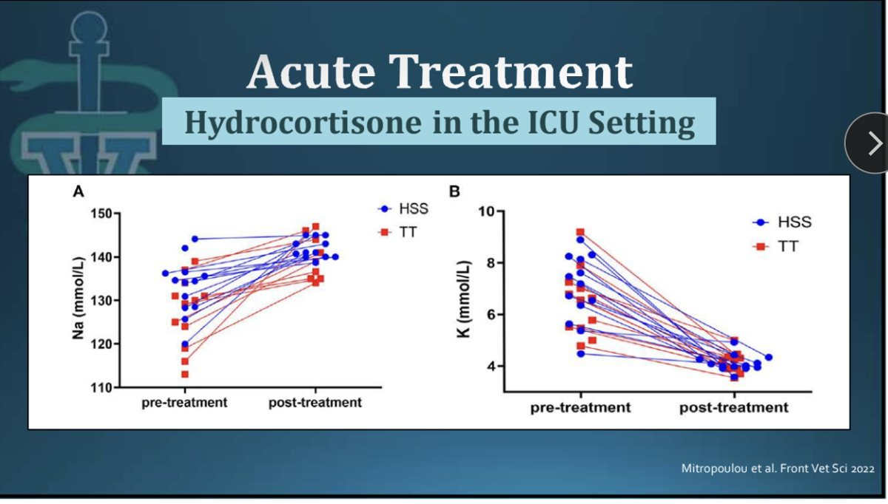
- 治療後兩組的鈉都上升到 135–147 mmol/L、鉀都降到約 4 mmol/L，恢復幅度幾乎一樣，兩組的線交錯在一起，看不出哪一組比較快或比較好。
- 🎤 理由：hydrocortisone 同時有糖皮質素和礦物皮質素作用，是人類原發性腎上腺功能不全的常用藥；糖皮質素效價比 pred、dex 低，但可以用劑量彌補。傳統以 CRI 約 0.5 mg/kg/hr 給予。
- 🎤 MSU 的 ICU 團隊對新東西總是很興奮，做了一兩年。但看現有資料，hydrocortisone CRI 沒有明確好處：兩組的鈉、鉀變化幾乎一樣，沒有顯著差異。
- 🎤 反而 hydrocortisone 組因為擔心電解質變化太快，做了更多次血氣和電解質。所以 MSU 不這樣做：「做得到，不代表應該做。」仍然靠積極輸液補礦物皮質素的缺口，靠靜脈 dexamethasone 補糖皮質素。
12. 慢性處置：糖皮質素與 DOCP
▾糖皮質素補充
- 首選 prednisone／prednisolone：便宜、容易取得、熟悉。
- 依臨床症狀與生化監測。
- 生理劑量 0.1–0.3 mg/kg/day；典型最終劑量 0.05–0.15 mg/kg/day。
- 預期有壓力時加倍？
- 治療失敗的頭號原因：糖皮質素不足。
- 🎤 MSU 幾乎所有 Addison 病犬都用 prednisone，因為便宜又好取得：飼主大約 10 美元就能買一年份。
- 🎤 教科書說生理劑量約 0.1–0.3 mg/kg/day，但對很多狗（尤其中大型犬）這其實是超生理劑量。40 公斤的黃金獵犬一天給 5 或 10 mg，大概就會多尿、多喝、多吃。大多數病犬最後的劑量比傳統「生理劑量」還低，中大型犬尤其如此。
- 🎤 壓力時要不要加倍？看壓力是什麼。要做骨科或其他手術，大概需要加倍；家裡晚上開派對，大概不算足以加倍的生理壓力。
- 🎤 舊研究說治療失敗頭號原因是糖皮質素不足，但不是獸醫沒開，而是給太多、狗出現副作用，飼主就自己停藥。所以要找到對的劑量，而這個劑量常常比傳統生理劑量低。
礦物皮質素補充
DOCP
- 2.2 mg/kg IM/SQ 每月一次
- 只有礦物皮質素作用 → 一定要另外給 pred
Fludrocortisone
- 0.01–0.02 mg/kg PO q12–24h
- 同時有礦物與糖皮質素作用
- 相關文獻：Zeugswetter 2014（ACTH 監測下的 prednisolone 劑量）、Roberts 2016 Vet Rec（穩定時間）、Kintzer & Peterson 1997 JVIM（205 隻長期追蹤）、Baumstark 2014 JVIM（以 PRA 比較 DOCP 與 fludrocortisone）。
- DOCP＝DOC 接上 pivalate 酯，注射後緩慢釋放；DOC 是醛固酮合成路徑中的天然前驅物（黃體素 → 11-去氧皮質酮 → 皮質酮 → 醛固酮）。
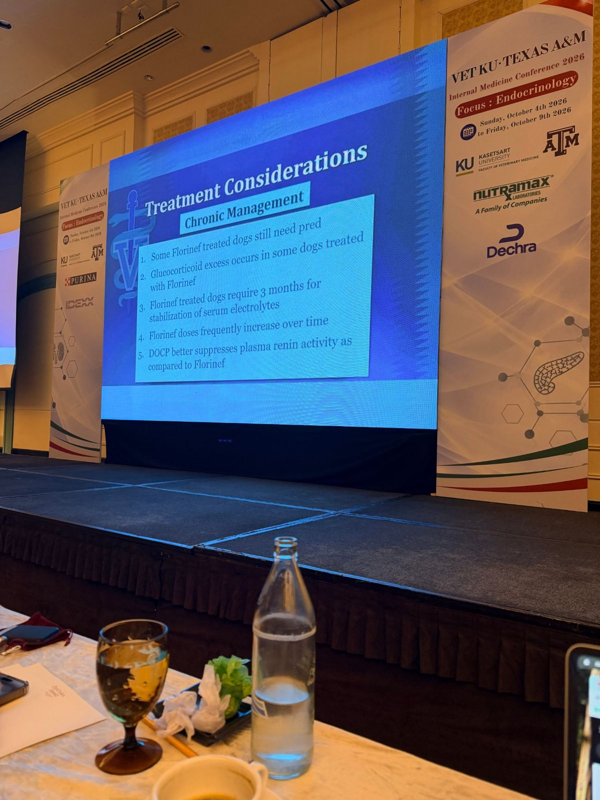
- 有些用 Florinef 的狗仍然需要 pred
- 有些用 Florinef 的狗會出現糖皮質素過量
- 用 Florinef 的狗需要 3 個月電解質才穩定
- Florinef 的劑量常隨時間增加
- 和 Florinef 相比，DOCP 更能抑制血漿腎素活性（PRA），也就是礦物皮質素補充得更完整
- 🎤 兩種藥都能有效治療礦物皮質素缺乏。DOCP 是純合成礦物皮質素，沒有糖皮質素作用，傳統上每月打一次；fludrocortisone 會作用在糖皮質素受體，所以也有一些糖皮質素作用，每天口服一到兩次。
- 🎤 比較這兩種藥的研究要小心看，因為多少有偏向 DOCP 的立場。研究顯示：本來希望只吃一顆藥，但很多用 Florinef 的狗還是要加 pred；有些狗又會糖皮質素過量，而且沒辦法分開調整，因為 Florinef 的劑量必須給到能維持電解質正常為止。
- 🎤 Florinef 組電解質穩定得比較慢，劑量也有隨時間增加的報告。早期研究說 DOCP 更能抑制腎素活性：剛確診的狗沒有醛固酮、腎素非常高，人醫用腎素來判斷礦物皮質素夠不夠。但講者認為「實際上可能只是劑量問題，不是什麼大差別」。
- 🎤 美國超過 85% 的獸醫用 DOCP，西歐的調查也一樣。講者偏好 DOCP 的理由：喜歡把糖皮質素缺乏和礦物皮質素缺乏當成兩個獨立問題，用 pred＋DOCP 才能兩種藥分別調劑量。
| Percorten-V® | Zycortal® | |
|---|---|---|
| 途徑 | IM（SC 也有效） | SC |
| 起始 | 2.2 mg/kg q25 天 | 2.2 mg/kg q25 天 |
| 最終維持 | 1.7–2.2 mg/kg，每 21–30 天 | 1.9 ± 0.27 mg/kg（1.2–2.5），每 20–46 天 |
| 賦形劑差異 | polysorbate 60、chlorocresol | polysorbate 80、0.002% thimerosal |
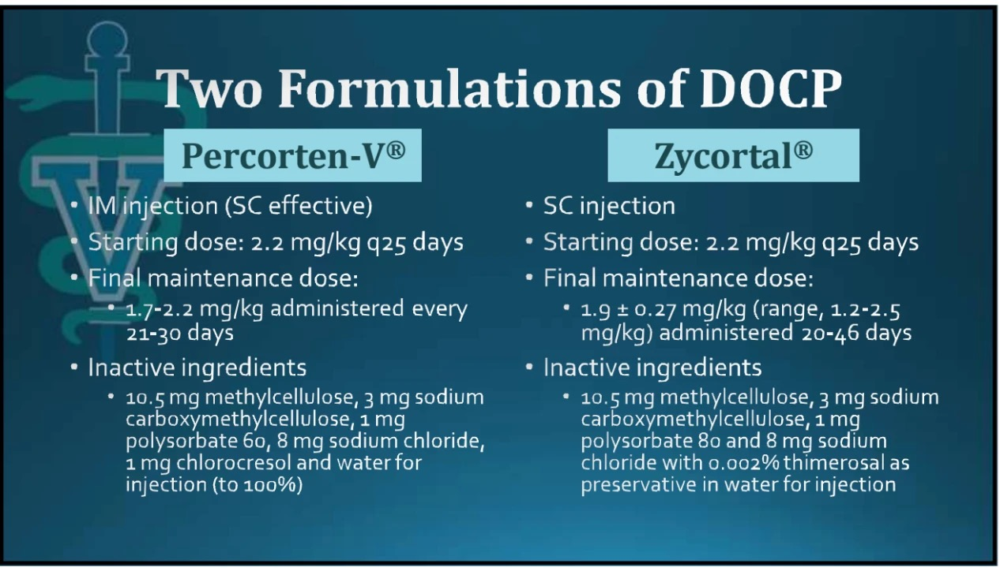
🎤 講者：DOCP 是 11-去氧皮質酮的酯類，是礦物皮質素合成的中間產物。兩種基本上是同一個產品，最大的差別其實是仿單：Percorten 標示肌肉注射，Zycortal 標示皮下注射。起始劑量相同，仿單上的最終維持劑量也差不多。
田野試驗：標示劑量從哪來
- Lynn et al. 1993 JAVMA（早期 Percorten-V）：舊病例 60、新診斷 9；2.2 mg/kg IM 於第 0、25、50 天；沒有探討其他給藥方案；第 75 天成功 97%（1 隻需 21 天間隔、1 隻第 65 天失敗、60% 沒給 pred）。
- Farr et al. 2020 Vet Rec（Zycortal 非劣性試驗）：151 隻 HA 低 Na:K；Zycortal 131、Percorten 39；雙盲；第 0、25、60、90…180 天給藥；依第 10、25 天 Na:K 調整（> 32 減量或延長、27–32 依第 10 天調整、< 27 加量或縮短）；第 90 天成功 86.2%（實驗室）／99%（臨床）。
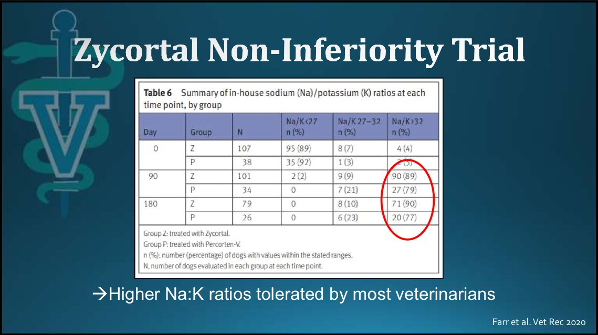
- 🎤 起始劑量怎麼來的？回頭看原始田野試驗，根本沒有探索多種劑量。這個劑量來自一個小規模的 PK 研究，對象是年輕健康的研究用 beagle（沒有 Addison），試驗只問「這個劑量對不對、安不安全」，沒試更低、更高的劑量，也沒試延長間隔。
- 🎤 Zycortal 的試驗設計成非劣性試驗，目的只是證明「和 Percorten 一樣」，也沒有探索其他劑量。
- 🎤 試驗中很多獸醫容忍偏高的 Na:K，因為狗臨床上很好、飼主開心、狗看起來開心、獸醫也開心，何必改？我們給的劑量不見得是對的劑量，只是短期內看起來不錯的劑量。
費用、仿單建議與過量的代價
| 2.2 → 2.0 mg/kg q30d | 9 kg 西高地 | 60 kg 聖伯納 |
|---|---|---|
| 藥費／月 | ฿1,600 | ฿10,500 |
| 藥費／年 | ฿19,000 | ฿125,000 |
| 終身 | ฿170,000 | > ฿830,000 |
- 仿單建議：依 Na:K 每次減 0.1–0.2 mg/kg，或延長 3–7 天。
- 人類腎上腺功能不全：住院與醫療支出較多、死亡率是一般人兩倍、心臟病是早死主因；礦物皮質素劑量不當可能增加心血管不良結果。
- 🎤 美國一瓶 DOCP 對飼主約 250 美元（25 mg/mL × 4 mL＝100 mg）。9 公斤的西高地（好發品種，Addison 西高地很多）一個月約 50 美元，大多數飼主還能接受；60 公斤的聖伯納若用接近標示劑量，終身花費相當於一台新車。台下回答泰國的 DOCP 也很貴。
- 🎤 兩種產品的仿單建議很像，都建議依 Na:K 微調劑量或間隔。但田野試驗裡雖然允許調整，大多數狗最後還是每月約 2 mg/kg，基本上就是長期打起始劑量。
- 🎤 投票「你怎麼給 DOCP？」：標示劑量每月一次、標示劑量拉長間隔、低劑量每月一次、其他。台下答案很分散，和美國聽眾一樣，大家做法差異很大。
- 🎤 不只是錢的問題。人類 Addison 病人壽命較短，心血管併發症（心肌梗塞、中風）多得多，被認為很大部分來自荷爾蒙補充不當：常常糖皮質素給太多，礦物皮質素有時太少、有時也太多。狗沒有類似資料，但劑量應該要符合生理，不只是考慮費用。
13. 低劑量 DOCP 四篇研究
▾| 研究 | 設計 | 主要發現 | 限制 |
|---|---|---|---|
| ① Bates 2013 Aust Vet J 「小狗 0.5 mL，大狗 1 mL」 | 回溯 49 隻；分四組：0.36–0.96（n=19）、1.00–1.47（n=7）、1.76–2.19（n=10）、≥ 2.2 mg/kg（n=13） | 沒有危象或住院；成犬都不需調整劑量（容忍輕微亞臨床異常）；死亡率無差；四組 Na、K 曲線 36 個月幾乎重疊 | 起始劑量憑經驗；追蹤不一致、資料缺漏；未評估作用時間與體重 |
| ② Jaffey 2017 JVIM 延長間隔 | 前瞻多中心 53 隻；標準劑量，每 7 天測電解質直到異常 → 個別化給藥間隔（IDI） | 作用約 2 個月（32–124 天）；每年省近 60%；年齡、體重、劑量與作用時間無關；仿單半衰期可能不正確 | 只有 15/53 完成；回診太多；電解質正常 ≠ 礦物皮質素正常（沒測 PRA）；25% 要再縮短 IDI；2 隻在估計 IDI 前 35、38 天就發病 → 活著 ≠ 活得好 |
| ③ Sieber-Ruckstuhl 2019 JVIM 起始 1.5 mg/kg SQ | 前瞻 17 隻（12 新、5 舊）；依第 14 天電解質調整 5–10%；q28–30d | 1.5 安全有效，但仍比多數狗需要的多（劑量逐漸降到 0.5–1.0）；只有 2 隻需加量（4 月齡臘腸幼犬、3 歲聖伯納 1.2→1.3→1.7→0.7） | 樣本小；沒測 PRA |
| ④ Vincent 2021 JVIM 1.1 vs 2.2 RCCT | 隨機雙盲 37 隻：2.2（n=18）vs 1.1（n=19）q30d，不調整；監測電解質＋PRA＋血壓 | 1.1 全部有效且耐受良好；2.2 組幾乎都過度治療；2 隻暫時性高血鉀（3 月齡對照組幼犬、6.5 kg 試驗組狗）；第 2、3 次注射後 Na:K 更高（累積） | 無法分析體重、年齡；沒評估作用時間 |
① Bates 2013：給低一點，Na:K 也差不多
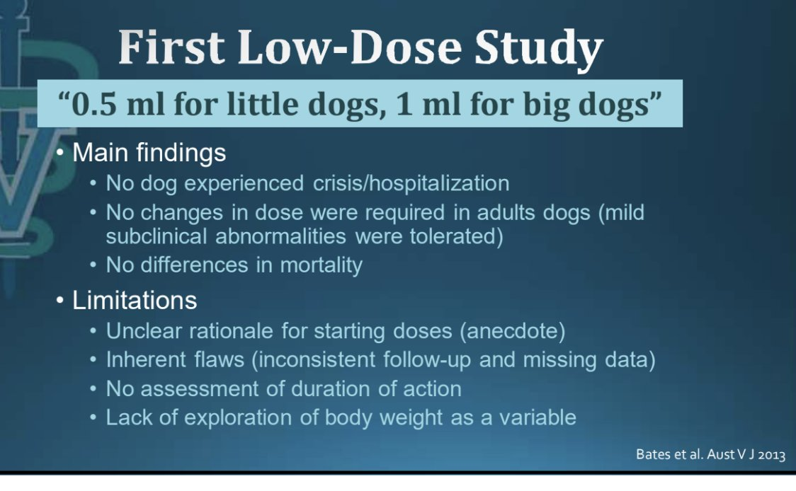
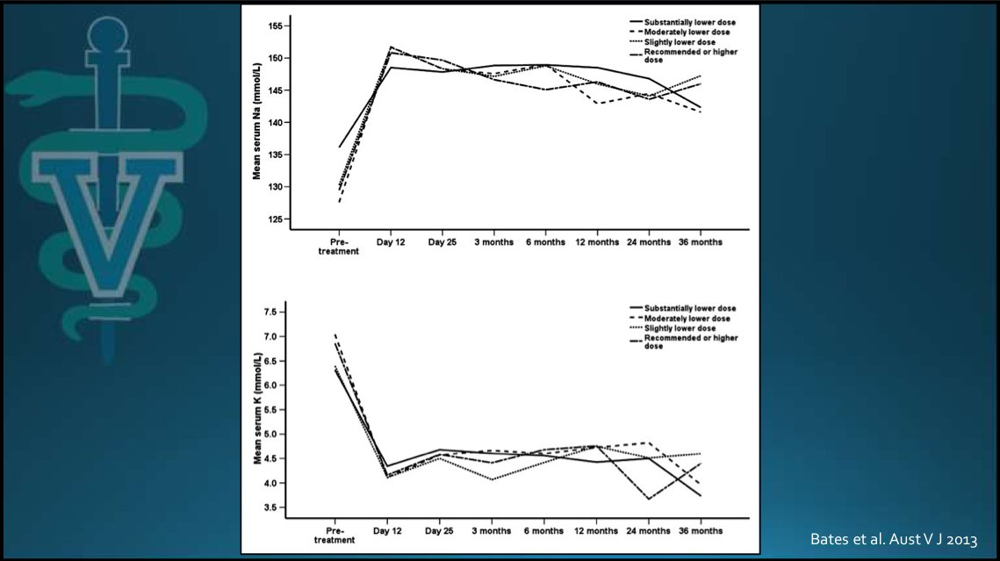
- 🎤 這篇是講者導師的研究。導師在醫院裡走來走去，只要有新確診的 Addison，就說「小狗打半 mL，大狗打 1 mL」。1 mL＝25 mg，所以 35、45、50 公斤的大狗拿到的劑量其實非常低。
- 🎤 回頭看大約 50 隻病犬的結果：不論 DOCP 劑量多少，三年間血鈉、血鉀都差不多，住院頻率和存活時間也沒有差異。結論是較低的起始和維持劑量對很多狗可能安全有效。
- 🎤 這篇被一家又一家期刊拒絕，最後登在澳洲獸醫期刊，美國讀者大多沒看到。限制是起始劑量沒什麼依據（講者知道原因：就是那句「小狗半 mL、大狗 1 mL」），回溯研究資料缺漏、追蹤不一。結果大多數獸醫的給法也沒因此改變。
💡 補充 但這是回溯研究，起始劑量憑經驗、追蹤不一致，也沒看作用時間與 PRA，所以只能說「低劑量似乎可行」，後面三篇前瞻研究才逐步證實。
② Jaffey 2017：延長間隔，真的比較好嗎？
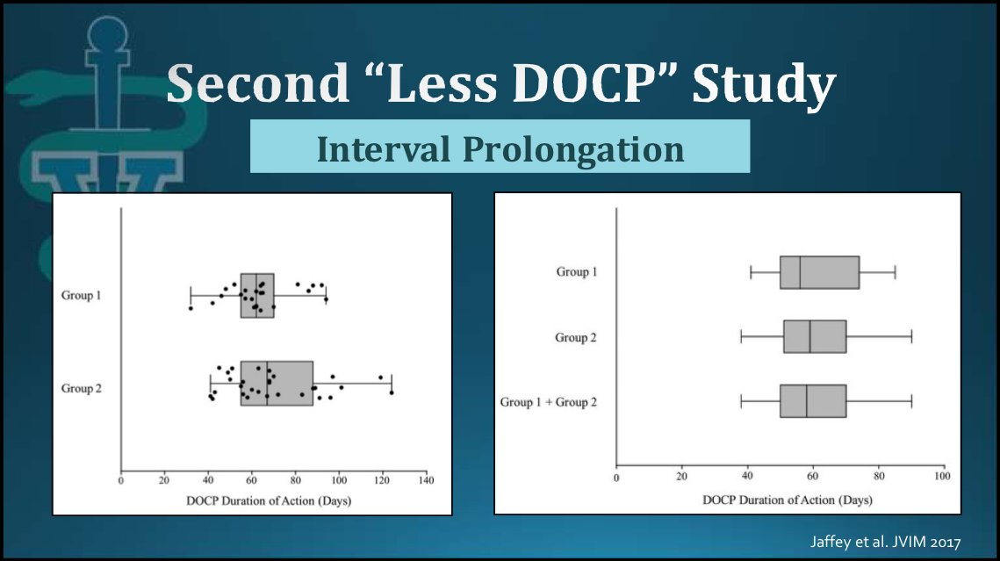
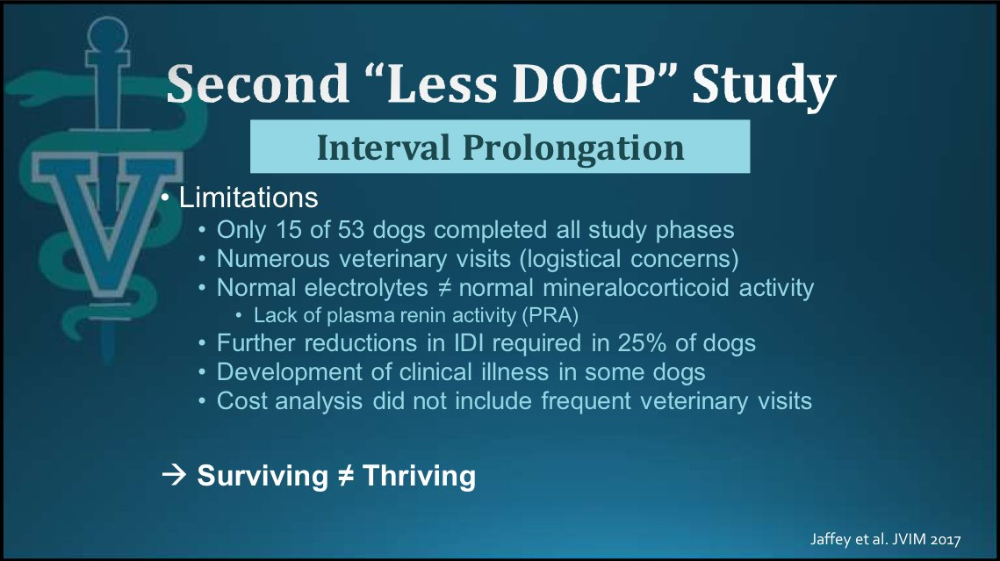
- 🎤 由當時還是住院醫師的 Jared Jaffey 發表。狗大多用接近標示劑量（約 2–2.2 mg/kg），第 25–30 天回來測電解質，正常就隔一週再測，一直到出現低鈉或高鉀。例如第 70 天出現異常，就把間隔定為 63 天（往前減一週），這就是個別化給藥間隔，再追蹤長期表現。
- 🎤 中位數間隔約兩個月，但資料變異非常大，有的狗超過 100 天。
- 🎤 很多狗沒有完成研究，有些狗在第一階段就生病了：為了等到電解質異常才停，有些狗真的病了。53 隻只有 15 隻完成所有回診。要說服飼主每週回來付一次複診和電解質費用，連續七八週，非常困難。有些狗的給藥間隔隨時間大幅改變。
- 🎤 電解質正常不保證礦物皮質素活性正常。美國有不少人用延長間隔的方案，但講者對這個做法一直比較謹慎：「活著不代表活得好。這些狗都活下來了，但有些生病了。」
③ Sieber-Ruckstuhl 2019：起始 1.5 mg/kg
- 🎤 起始劑量比標示劑量少約 25%，追蹤 17 隻，並依持續的電解質監測調整劑量，講者覺得這是比較好的設計。
- 🎤 1.5 mg/kg 不只是安全有效的起始劑量，大多數狗劑量還會隨時間下降，到第二年很多狗約每月 1 mg/kg。
- 🎤 只有兩隻要加量。一隻是 4 月齡臘腸幼犬；導師那篇唯一要加量的也是生長中的幼犬。講者認為生長中的幼犬藥物吸收和代謝不一樣。另一隻聖伯納從 1.3 加到 1.7，講者臨床上沒看過，而且最後降到 0.7，覺得是個異常值。這篇顯示我們給的 DOCP 可能太多了。
④ Vincent 2021（MSU）：1.1 vs 2.2 mg/kg 隨機對照試驗
- 🎤 標示起始劑量的一半 vs 2.2 mg/kg，飼主、獸醫都不知道每隻狗打多少。注射後兩週和第 30 天回診，除了電解質、生化、理學檢查，也測腎素活性來更準確評估礦物皮質素作用。
- 🎤 MSU 的 Na:K 參考範圍是 29–37。1.1 mg/kg 每 30 天的狗表現很好，Na:K 其實更「正常」；2.2 mg/kg 的狗可能偏高。
- 🎤 2.2 mg/kg 組三個月後尿比重顯著較低，有些狗開始多尿多喝，可能造成了某種醛固酮過多的狀態。
- 🎤 腎素數據最驚人：到第 90 天，幾乎每隻 2.2 mg/kg 的狗都嚴重過量，很多腎素低到測不到。狗臨床上感覺很好，但以礦物皮質素治療來說是嚴重過度治療。半劑量組也有很多狗仍然過量。講者不是說 1.1 是完美劑量，但耐受性很好，過度抑制也比較少。
- 🎤 讓研究團隊比較擔心的是第一堂提到那隻 3 個月大的拉布拉多 Ziggy，研究期間出現高血鉀（幼犬對藥物反應不同）；另一隻 6 公斤小型犬有一次高血鉀。都是亞臨床，沒有症狀。
- 🎤 這篇改變了 MSU 的給法：起始和維持劑量通常都約 1 mg/kg。
- 不見得省錢：要找出每隻狗的個別間隔（IDI），得每 7 天回診測電解質，論文的成本分析沒有算進這些回診費；53 隻裡只有 15 隻走完全部流程。
- 比較危險：標準劑量打下去前段過量，拉到後段又可能不足；電解質正常不代表礦物皮質素足夠（沒測 PRA），有 2 隻在預估間隔前 35、38 天就發病，25% 還得再縮短間隔。
- 所以講者偏好的做法是降低劑量、維持固定間隔，而不是標準劑量硬拉長間隔。
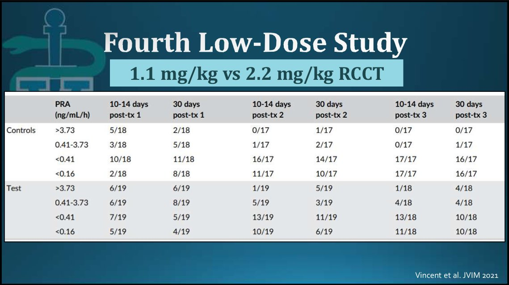
14. MSU DOCP PK/PD 研究
▾研究目的與族群（Langlois et al., JVIM）
- PK 假設：注射後 > 30 天仍測得到；暴露量與劑量相關；半衰期與劑量無關。
- PD 假設：現行方案常使 PRA 被過度抑制；電解質會高估作用時間、低估過度治療時間。
- → 目標：安全、符合生理、具成本效益。
- 21 隻；低劑量與標示劑量組的年齡、性別、體重、Na:K（18.9 vs 18.9）、prednisone 劑量都無差異。
- 🎤 新確診的 Addison 病犬，一半打 1.1、一半打 2.2 mg/kg，定期回診直到藥物從體內消失。怎麼知道消失了？做法和 Jaffey 一樣，追蹤到電解質異常為止。這只是為了研究，臨床上不是這樣治療。
藥物動力學
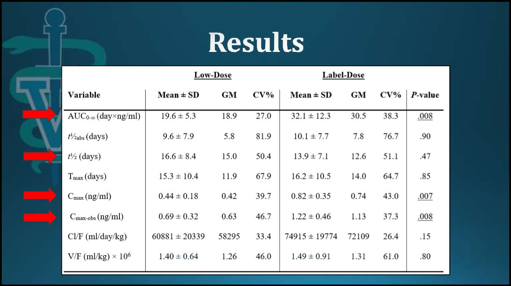
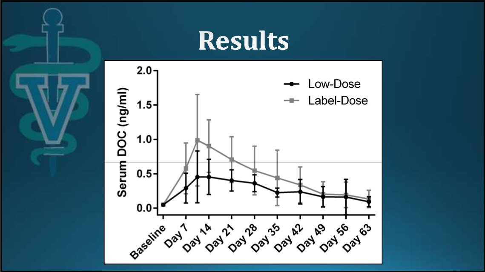
- 🎤 給越多藥、暴露量越大，這不意外。重點是不是線性關係：給 2.2 mg/kg 並沒有讓暴露量或最高濃度變成兩倍。
- 🎤 半衰期約 15 天（約兩週）。早期延長間隔的研究以為半衰期長得多，但那只是因為藥效在有些狗身上好像持續很久。
- 🎤 大多數狗血中 DOC 到約 6 週還測得到，而且 6 週時的濃度通常在不會造成電解質異常的範圍。所以對很多狗來說，6 週大概是不錯的間隔：不是 3 個月，不是 120 天，大約 5–6 週。
藥效學
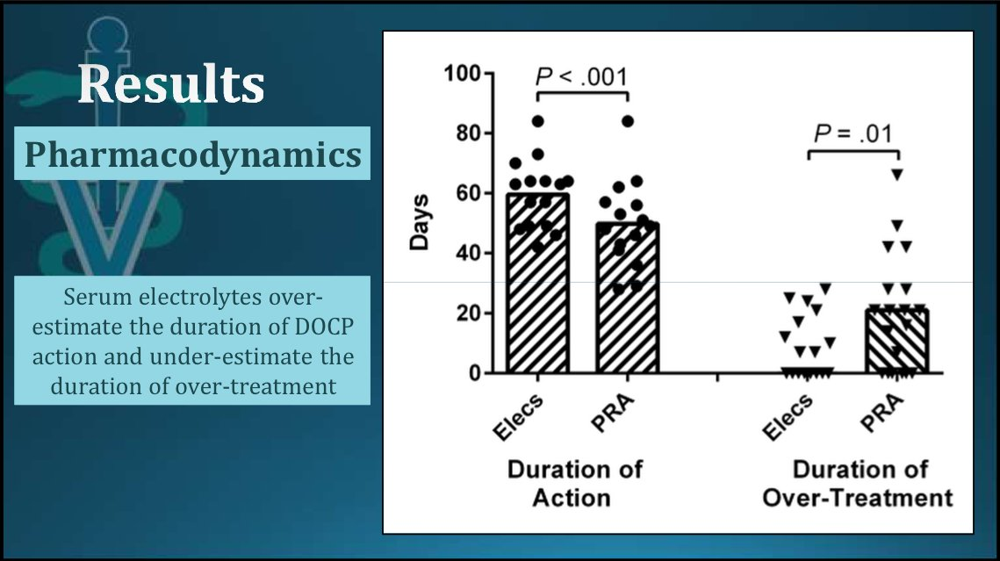
- 📄 105：兩組 PRA 在第 7–14 天就被抑制到接近 0，持續到第 35 天；Na:K 穩定在 32–36。
- 📄 106：第 21 天 vs「倒數第二次」採樣，HCT 43→50、白蛋白 3.2→3.7、鈣 10.2→10.9、肌酸酐 1.0→1.1（皆顯著）→ 電解質變化之前，已經出現血液濃縮，礦物皮質素作用其實在消退。
- 🎤 如果只靠電解質來判斷作用時間和過量，你會漏掉：腎素已經上升後，電解質還會正常一段時間；只看電解質，也會漏掉很多過度治療。臨床上還是會用電解質，但如果只看電解質又想大幅延長給藥間隔，狗可能處在危象的風險中。
- 🎤 除了腎素，很多時候生化也會在電解質異常之前透露 DOCP 已經沒了：很多狗先出現體液流失或脫水的跡象，白蛋白、鈣會先升高。要看整體的變化。
- 📄 108 離群值：2.8 歲 Doodle 吸收極少（Cmax 0.15）、PRA 持續偏高、第 29 天 Na:K 偏低但臨床良好；7 歲混種 DOC 一直很低。兩隻都以低劑量每月一次維持。
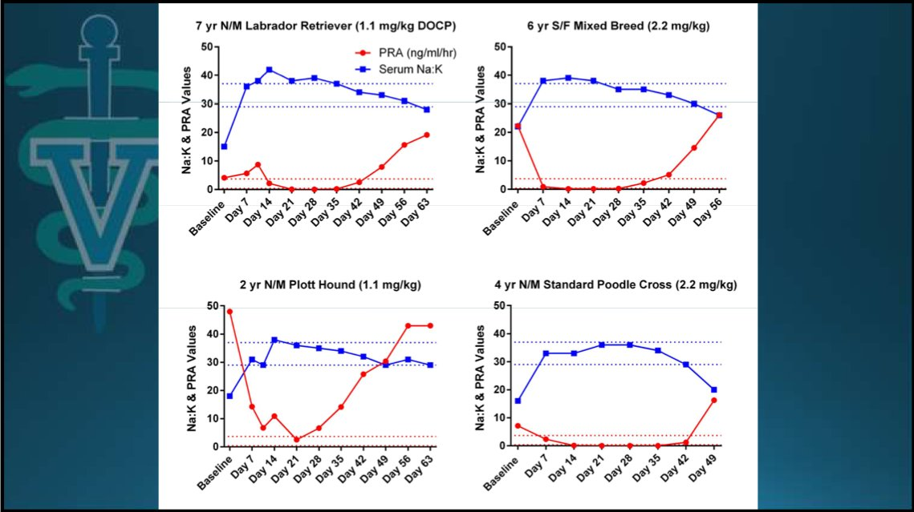
- 🎤 第一隻：打完 DOCP 反應很好，前段大概過量，藥效持續到第 42、49 天，但腎素在電解質異常前兩週就已經異常升高。這是非常常見的模式：電解質變化落後於腎素。
- 🎤 有一隻狗腎素異常升高了 6 週，電解質才出現異常。回頭看延長間隔研究裡那些拉到 100、110 天的狗，很可能早就缺礦物皮質素，只是還沒出現電解質異常。講者把這些狗看成「不定時炸彈」，這也是他擔心大幅延長間隔方案的原因。
- 🎤 研究總有離群值：一隻吸收很差，另一隻藥效真的持續好幾個月。但大多數狗藥效約 5–6 週。結論：較低劑量、每 5–7 週給一次，對很多狗大概是最佳點，也更符合生理，能避免標示劑量方案的過度治療。
討論、理想劑量與 MSU 經驗
- 較低劑量、每 5–7 週給一次；低劑量較頻繁給藥，優於標示劑量拉長間隔（標示劑量約 25 天處於過量，之後可能較長時間不足）。
- 電解質 ≠ 礦物皮質素狀態：太晚反映不足，也低估過量。
- 大概不可能維持 PRA 完全正常（個體內外變異；< 5 kg 小型犬與 < 1 歲幼犬資料不足）。
- 但 1.1 mg/kg q4–6 週：第 42 天 DOC 平均仍 0.23 ng/mL；第 42 天前 PRA 很少偏高；Na:K 異常落後於 PRA；過量較輕；省 65%。
- 🎤 理想劑量是多少？「我希望能給你答案，但我想沒有人有完美劑量。」DOCP 吸收很快，約 10–15 天達峰，然後慢慢消退，所以不可能整個間隔都維持完美的礦物皮質素狀態，幾乎一定會有一點過量。但用較低起始劑量、間隔約 4–6 週或 4–7 週，可以把過量降到最低。
- 🎤 藥物模擬：1.1 mg/kg 每 5 週一次，整個間隔都能維持足夠濃度，雖然仍有一些過量，但比標示劑量少得多。
- 🎤 MSU 的做法：大多數狗每月約 1 mg/kg；很大型的犬常拉到每 5–6 週一次，用的 DOCP 比標示劑量少很多。（講者說時間不夠，跳過了後面幾張，直接講最後一個病例。）
- ✍️ 筆記 老師覺得大概可以每 5–6 週給一次，劑量低一點。（呼應 PK：半衰期約 2 週、第 42 天仍測得到 DOC，PRA 在第 42 天前很少偏高。）
- 監測：建議第一次 DOCP（及每次調整）後 10–14 天與 25–30 天檢查。
- MSU 超過 100 隻：第 10–14 天常見過量；不足很少見，從未記錄到有臨床意義的不足；會隨時間累積。→ 經費有限時可以省略第 10–14 天複檢？
15. 總結、Stella 與非典型治療
▾總結
保持警覺
- 早期或「非典型」很容易漏
- 正確辨識省時省錢
- 區分「生病的狗」與「Addison 危象」
診斷
- ACTH 刺激仍是標準
- 尿 cortisol 比基礎血清 cortisol 準
- 減少 ACTH 刺激的「白做」
治療
- 短期內院內支持療法常很關鍵
- 低劑量糖皮質素
- 低劑量 DOCP q4–6 週
壓軸病例：Stella，6 歲已絕育母犬，標準貴賓 → 原發性 Addison
- 因低白蛋白轉診：2 個月前（急性肝病時）發現，之後 3 次生化都持續偏低；就診時狀況良好，BCS 3–4/9。
- 生化：Na 150、K 4.0、Na:K 38、Cl 118 H、Alb 2.7 L、Chol 86 L、CK 201 H。
- ACTH 刺激：前 11、後 13 nmol/L；eACTH 128 pg/mL（偏高）；醛固酮 前 7、後 11 pmol/L（偏低）。
- 🎤 第一年住院醫師看的病例。兩個月前狗翻垃圾桶吃壞肚子，原本的獸醫抽血發現白蛋白輕度偏低，給了輸液和止噁心藥就好了；之後幾次複檢白蛋白都還是低，就轉診到 MSU 檢查低白蛋白血症。
- 🎤 住院醫師說「我覺得是 Addison」。講者平常主張這種狗都要驗 Addison，但這次連他都有點懷疑。結果住院醫師是對的。檢驗只有白蛋白、膽固醇輕度偏低，和前面那些非典型病例很像。
- 🎤 cortisol 低、eACTH 高，表示是原發性，真正的腎上腺疾病；醛固酮也很低。
非典型病例的治療與預後
- 存活是否受影響未知：Haviland 2016 CVJ 非典型存活較短（4.2 vs 5.6 年），但非典型病犬確診時年紀較大；沒有研究確立兩者是否真的不同。
- 文獻顯示 70–80% 的非典型病犬一開始只用糖皮質素；Herrtage 2019 SCE 摘要：幾乎所有非典型病犬都缺乏醛固酮；SCE／ESVE 仍在爭論；估計 2/3–3/4 只用 pred。
講者：「答案是我們不知道。」大多數人都同意狗需要一些糖皮質素，幾乎每個選項都有（連 fludrocortisone 也有一點）。問題是電解質正常時，要不要補礦物皮質素？
- 幾年前在內分泌會議上，Michael Herrtage 發表摘要，顯示大多數這類狗缺乏醛固酮，但台下對要不要給礦物皮質素意見分歧。講者的感覺是大約 2/3–3/4 只用 pred，再持續追蹤電解質。
- 講者自己會給一點點 DOCP：「那樣我睡不安穩。」因為擔心 40–50% 的這類狗日後會變成典型 Addison，他寧可避免危象發生。
- 沒有對錯，獸醫界仍在爭論，可能其他座談講者做法不同。
15b. 第二堂 Q&A
▾- 2–3 天：檢測會測到一些 pred，但不多。吃了兩天後仍是平線反應、cortisol 低到正常偏低，講者會相信這個結果。
- 5–7 天：可能已經造成腎上腺萎縮，沒有好方法判斷。
- MSU 的做法：如果有電解質異常又在吃 pred，會做 ACTH 刺激並測醛固酮。
- 否則只能停類固醇一到兩週。改用 dexamethasone 也沒用：它不會和 cortisol 檢測交叉反應，但一樣會抑制 HPA 軸。
- 如果很早發現、只吃了一兩劑，通常照樣做刺激試驗；超過這個量，就測醛固酮（有電解質異常時），或做最佳的臨床判斷。也試過逐漸減藥再重測，但這需要和飼主深入溝通。
- eACTH：區分原發性或次發性。如果是次發性，代表兩件事：這隻狗永遠不需要礦物皮質素（DOCP）；而且牠的腦下垂體有問題，應考慮做腦下垂體影像。
- 醛固酮正常（不常見，但偶爾會有）→ 不給礦物皮質素。
- 醛固酮 0 和 0 → 講者會給很低劑量的礦物皮質素（「這樣晚上睡得比較好」），其他講者可能不給。
- 非典型病犬中，大約 70–80% 缺乏醛固酮；有些是腦下垂體腫瘤或其他問題；偶爾也有原發性卻仍分泌一些醛固酮的狗。
Take-home、更正表與參考資料
▾病例答案一覽
| 病例 | 結果 | 關鍵 |
|---|---|---|
| 病例 1：9 月齡混種 | 不是（腎盂腎炎） | 有壓力像、USG 1.050、泌尿道病灶 |
| 病例 2：4 歲混種 | Addison（危象） | 重症卻淋巴球增多、低血糖、低膽固醇；cortisol 0/0 |
| 病例 3：12 歲 Brittany | 不是（鞭蟲） | 有用 Sentinel 也不能排除 |
| 病例 4：4 歲混種（熱點） | Addison | 變化極輕微；cortisol 0/0 |
| 病例 5：Harlow 大丹 | Addison（非典型） | 巨食道；cortisol 0/1、醛固酮 0/0 |
| Bella：10 歲混種 | Addison（非典型） | 只有低白蛋白／血糖／膽固醇；cortisol、醛固酮皆測不到 |
| Molly：5 歲拉布拉多 | 原發性 Addison | 麻醉前檢查發現；eACTH 高、醛固酮低 |
| Maya：12 歲波士頓㹴 | 不是 | 基礎 69、刺激後 679 |
| Gus：8 月齡拉布拉多 | 不是 | 基礎 225，一次排除 |
| Bernadette：1.5 歲貴賓 | 不是 | 基礎 34 排除不了；尿 cortisol 278 排除 |
| Hazelnut Latte：5 歲比特混種 | 不是 | 基礎 19；尿 cortisol 203 排除 |
| Stella：6 歲貴賓 | 原發性 Addison | Na:K 38、狗很好；eACTH 128 |
【更正】 逐字稿轉文字錯誤
| 逐字稿 | 正確 |
|---|---|
| in-topic verters | ectopic ureters（異位輸尿管） |
| pilonephritis | pyelonephritis（腎盂腎炎） |
| hematocrit around 16% | Hct 60%（講義 📄 15，血液濃縮） |
| Britons | Brittany（布列塔尼獵犬） |
| esophageal dysplasia | esophageal dysmotility（食道蠕動異常，📄 25） |
| uniatremic and UKL hypoaldosteronism | eunatremic and eukalemic hypoadrenocorticism |
| luxemburgite abnormalities | electrolyte abnormalities |
| primary hyperadrenocorticism（Molly） | primary hypoadrenocorticism |
| Edinger textbook | Ettinger 教科書 |
| Ellen Baron at Auburn | Auburn 團隊（講義引用 Corrigan et al. 2010 AJVR） |
| Adam Birkenhauer and Kathy Wan | Adam Birkenheuer、Katharine Lunn（NC State） |
| ASH | ACVIM（2018 摘要） |
| Kenny Luminescent Amino Acid the Emulite | chemiluminescent immunoassay（Immulite） |
| 11.34 / 11.28 | 1134 / 1128 nmol/L（📄 54） |
| animals per liter | nmol/L |
| non-inflammatory illness / non-drill illness | non-adrenal illness（NAI） |
| Barnet | Bernadette |
| rho .05 or .06 | 約 0.5–0.6 |
| Antec / IDX | Antech / IDEXX |
| 第二堂 | |
| mixed percade doses | mg/kg doses |
| hypotremia / hypotonicity | hyponatremia |
| pontine myelinosis | central pontine myelinolysis（橋腦中央髓鞘溶解） |
| Normar | Normosol |
| Dr. Ma | Dr. Mott（第 07 場照護光譜講者） |
| dexmedetomidine（輸液、…、start mineralocorticoid） | dexamethasone |
| a half nanogram per hour | 約 0.5 mg/kg/hr（📄 69） |
| hybrid cortisone | hydrocortisone |
| florenet | Florinef（fludrocortisone） |
| DSCP / DACP / VACP / BACP / DOPP / DOC P | DOCP |
| Percodan B / Perkort / pericord | Percorten-V |
| Zicordol / Zycoril / a portal | Zycortal |
| healthy research eagles | beagles |
| anisins | Addison's |
| Dr. Jared Jacki | Dr. Jared Jaffey（Jaffey et al. JVIM 2017） |
| 1.17 | 1.1 mg/kg |
| mgs per kid / mix per kg / a micro K / a mid per kid | mg/kg；「a micro K」＝約 1 mg/kg |
| renal activity | renin activity（腎素活性） |
| thym depletion | volume depletion（體液流失） |
| hypogonademia | hypoalbuminemia（📄 115） |
| Mike Herdaj | Michael Herrtage（📄 117） |
| iodine deficient | aldosterone deficient |
| anadystonian | Addisonian |
| ACH stim | ACTH stim |